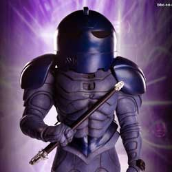

| Home | The Doctors | The Companions | The Villains | Show History |
SontaransThe Sontarans are a fictional extraterrestrial race of humanoids from the British science fiction televisionseries Doctor Who, and also seen in spin-off series The Sarah Jane Adventures. A warrior race who "live to kill", they are characterised by their ruthlessness and fearlessness of death. They were created by writer Robert Holmes. |
Brendan Davey Monica DuCong'e Erik Eyler Kayleen Garcia Katie Hyche Ryan Moeller |
Christine O'Brien Alex Recinos Julia Schwartz Madeleine Schwartz Ann Marie Skjold Ashly Wilkins |
[Reference Links] |